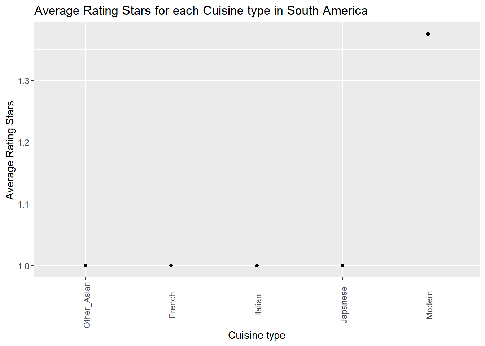

Cuisine type and star ratings
Average Star Ratings for each Cuisine Type at Baseline
In total, there are 70 cuisine types at baseline. The average star rating for each cuisine type is shown as the following:
Hunanese and Sichuan, Japanese Contemporary, and Sichuan-Huai Yang are the top three cuisine types with 3 stars rating.
Collapsing cuisine types into simpler categories
Baseline cuisine types are being re-categorized into 19 new cuisine types mainly by country and continent. Cuisine types with only 1 observation is being added into a larger category that is relevant:
- American: American, Californian
- Australian: Australian
- Other_Asian: Asian, Asian contemporary, Asian influences, Peranakan
- Chinese: Cantonese, Hang Zhou, Sichuan, Sichuan-Huai Yang, Cantonese Roast Meats, Fujian, Hunanese and Sichuan, Chinese, Shanghainese, Taiwanese, Dim Sum, Taizhou, Noodles and congee
- French: Classic French, French contemporary, Creative French, French, Modern French
- British: Creative British, Traditional British, Modern British
- Other_European: European, European contemporary, Austrian, Danish, Finnish
- Meats: Meats and grills, Barbecue
- Modern: modern, Contemporary, creative, Fusion, Modern cuisine, Creative, Gastropub, Innovative
- Other: International, Street Food, Temple cuisine, Seafood, Vegetarian, Classic cuisine, Market cuisine, Regional cuisine, Steakhouse, Moroccan
- Japanese: Japanese contemporary, Sushi, Teppanyaki, Japanese
- Scandinavian: Scandinavian
- Italian: Italian, Italian contemporary
- Korean: Korean, Korean contemporary
- Mediterranean: Mediterranean, Mediterranean cuisine
- Thai: Thai, Southern Thai, Thai Contemporary
- Indian: Indian
- Spanish: Spanish
- Mexican: Mexican
| cuisine_new | n |
|---|---|
| Australian | 2 |
| Meats | 3 |
| Spanish | 4 |
| Mediterranean | 5 |
| Scandinavian | 5 |
| Other_Asian | 6 |
| Mexican | 6 |
| Other_European | 11 |
| Indian | 12 |
| Korean | 16 |
| Thai | 16 |
| Italian | 22 |
| American | 24 |
| Other | 43 |
| British | 47 |
| French | 57 |
| Chinese | 71 |
| Japanese | 74 |
| Modern | 271 |
Relationship between cuisine type and star ratings
The relationship between new cuisine type and star ratings is shown in the following graph:
Among the 19 cuisine types worldwide, French and Korean have the highest rating stars.
Separated by continent:
Asia
In Asia, the top two rated cuisine types are still Korean and French, same to the top two rated cuisine types worldwide.
Europe
In Europe, the top two rated cuisine types are Japanese and French.
North America

In North America, the top two rated cuisine types are Scandinavian and Other Asian.
South America

In South America, the top rated cuisine type is Modern food.
Overall, French cuisine type has a relatively high star ratings. It was surprising to see that French has the second highest star ratings in Asia, and Other Asian had the highest star ratings in North America.